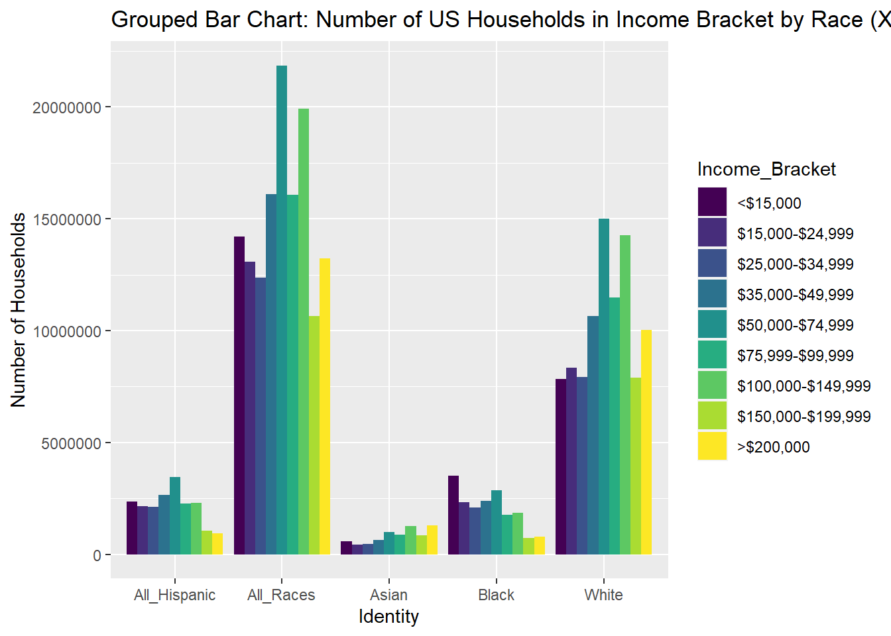
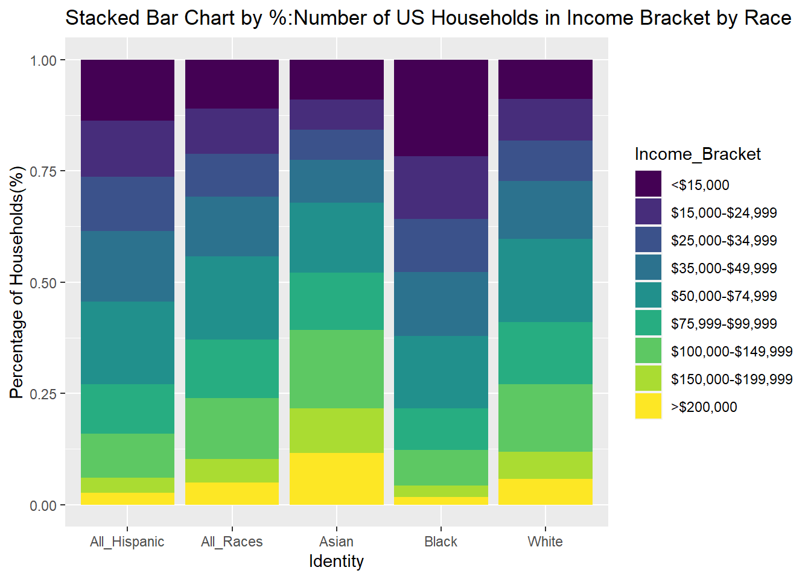

library(tidyverse)
library(ggplot2)
knitr::opts_chunk$set(echo = TRUE, warning=FALSE, message=FALSE)Emma Narkewicz Challenge 6
challenge_6
emma_narkewicz
usa_households
Visualizing Time and Relationships
- usa_hh ⭐⭐⭐
I chose to read in the usa_hh data because I hadn’t worked with it yet and it contained a measure of time and many variables that can be used as parts of a whole, including racial groups and income levels. This data set was trickier than I remembered, and I didn’t anticipate how much upfront tidying, mutating, and critical thinking I had to do before graphing it.
On the read in I: - skipped over notes and the title at the beginning of the table - renamed the columns - deleted the standard error columns because I didn’t feel like including them in my visualization - removed the footnotes from the bottom (after I read them)
library(readxl)
#read in data
USA_HH <-read_excel("_data/USA Households by Total Money Income, Race, and Hispanic Origin of Householder 1967 to 2019.xlsx",
skip = 5,
col_names = c("Year", "Number_of_HHolds_in_1000s", "Delete", "Income_Under_$15,000", "Income_$15,000-$24,999", "Income_$25,000_to_$34,999", "Income_$35,000_to_$49,999","Income_$50,000_to_$74,999K", "Income_$75,999_$99,999K", "Income_$100,000_$149,999", "Income_$150,000_to_$199,999", "Income_Over_$200,000", "Median_Income", "Delete", "Mean_Income", "Delete")) %>%
select(!contains("Delete"))
#Remove Footnotes At Bottom of Tables
USA_HH <- head(USA_HH, -31)
USA_HH# A tibble: 352 × 13
Year Numbe…¹ Incom…² Incom…³ Incom…⁴ Incom…⁵ Incom…⁶ Incom…⁷ Incom…⁸ Incom…⁹
<chr> <chr> <dbl> <dbl> <dbl> <dbl> <dbl> <dbl> <dbl> <dbl>
1 ALL … <NA> NA NA NA NA NA NA NA NA
2 2019 128451 9.1 8 8.3 11.7 16.5 12.3 15.5 8.3
3 2018 128579 10.1 8.8 8.7 12 17 12.5 15 7.2
4 2017… 127669 10 9.1 9.2 12 16.4 12.4 14.7 7.3
5 2017 127586 10.1 9.1 9.2 11.9 16.3 12.6 14.8 7.5
6 2016 126224 10.4 9 9.2 12.3 16.7 12.2 15 7.2
7 2015 125819 10.6 10 9.6 12.1 16.1 12.4 14.9 7.1
8 2014 124587 11.4 10.5 9.6 12.6 16.4 12.1 14 6.6
9 2013… 123931 11.4 10.3 9.5 12.5 16.8 12 13.9 6.7
10 2013… 122952 11.3 10.4 9.7 13.1 17 12.5 13.6 6.3
# … with 342 more rows, 3 more variables: `Income_Over_$200,000` <dbl>,
# Median_Income <dbl>, Mean_Income <chr>, and abbreviated variable names
# ¹Number_of_HHolds_in_1000s, ²`Income_Under_$15,000`,
# ³`Income_$15,000-$24,999`, ⁴`Income_$25,000_to_$34,999`,
# ⁵`Income_$35,000_to_$49,999`, ⁶`Income_$50,000_to_$74,999K`,
# ⁷`Income_$75,999_$99,999K`, ⁸`Income_$100,000_$149,999`,
# ⁹`Income_$150,000_to_$199,999`Briefly describe the data
The US Households data set contains information collected by the US Census Bureau on household income level by race and Hispanic ethnicity. The data set spans collected from 1967 through 2019, with measures of race changing over time (more on this later). For each racial category, there was an annual count of the number of households (in 1000s), estimated median income, estimates mean income, and percentage of households in each of 9 income brackets: - Less than $15,000 - $15,000 - $24,999 - $25,000 - $34,999 - $35,000 - $49,999 - $50,000 - $74,999 - $75,000 - $99,999 - $100,000 - $149,999 - $150,000 - $199,999 - $200,000 and over
The income brackets are not all the same size and range from $9,999 to $49,999.
After reading in the data, I have a data set with 259 rows and 13 columns. Some of these columns contain more than one variable or variables that are the currently assigned the incorrect variable type.
- Year (
) contains years, and information on race and Hispanic origin in one column. Race and year will need to be separated, and year converted to a date type variable. - Number_of_HHolds_in_1000s
this is the total number of households in units of 1000s. It is currently a character variable and will need to be made numerical. - The 9 income columns, all numeric
(with units of %) - Estimated median income
(units of $) - Estimated mean income
, needs to be made numeric (units of $)
Returning to the measures of race, according to the data table foot notes, sampling design and racial categories changed over time. In addition to being asked their race, households were asked to indicate if they were Hispanic. One of the most noticeable changes in measuring race is that beginning in 2002, Census respondents were able to select more than one race category. This means racial categories prior to 2002 do not map on perfectly to data from 2002 - 2019. The total “identity” categories which encompass both race and hispanic origin, as well as the years each racial measure was used are below:
- All Races (1967 - 2019)
- Hispanic, Any Race (1972 - 2019)
- White Alone (2002 - 2019)
- White (1967 - 2001)
- White Alone, Not Hispanic (2002 - 2019)
- White, Not Hispanic (1972 - 2001)
- Black Alone or In Combination (2002 - 2019)
- Black Alone (2002 - 2019)
- Black (1967 - 2001)
- Asian Alone or In Combination (2002 - 2019
- Asian Alone 2002 - 2019
- Asian and Pacific Islander (1987 - 2001)
The data required further tidying and mutating before working with it graphically. Race and year need to be separated out into their own columns, variable types corrected (chr -> dbl) for some variables, consistent racial categories need to be created, footnotes should be removed, and the data set can be tidied by pivoting longer the income categories. Phew, that’s a lot!
To begin, the first Year column contains not only year, but information on race, and Hispanic origin. Furthermore, there are also footnotes in the first column and data multiple times for certain years. I revisited my challenge 3 code on the Australian marriage data set to mutate out Race. I referenced Prof Rolfe’s Challenge 3 solution to find the [[:alpha:]] function to select alphabetical columns (race and Hispanic origin) from year (numerical).
#Creating new Identity column
USA_HH_Data <- USA_HH %>%
mutate(Identity = case_when(
str_detect(Year, "[[:alpha:]]") ~ Year)
)%>%
relocate(`Identity`, .before = `Year`)%>%
#Fill down the Identity Column
fill(Identity) %>%
#Remove the Identity from the year
filter(!str_detect(Year, "[[:alpha:]]"))
USA_HH_Data# A tibble: 340 × 14
Ident…¹ Year Numbe…² Incom…³ Incom…⁴ Incom…⁵ Incom…⁶ Incom…⁷ Incom…⁸ Incom…⁹
<chr> <chr> <chr> <dbl> <dbl> <dbl> <dbl> <dbl> <dbl> <dbl>
1 ALL RA… 2019 128451 9.1 8 8.3 11.7 16.5 12.3 15.5
2 ALL RA… 2018 128579 10.1 8.8 8.7 12 17 12.5 15
3 ALL RA… 2017… 127669 10 9.1 9.2 12 16.4 12.4 14.7
4 ALL RA… 2017 127586 10.1 9.1 9.2 11.9 16.3 12.6 14.8
5 ALL RA… 2016 126224 10.4 9 9.2 12.3 16.7 12.2 15
6 ALL RA… 2015 125819 10.6 10 9.6 12.1 16.1 12.4 14.9
7 ALL RA… 2014 124587 11.4 10.5 9.6 12.6 16.4 12.1 14
8 ALL RA… 2013… 123931 11.4 10.3 9.5 12.5 16.8 12 13.9
9 ALL RA… 2013… 122952 11.3 10.4 9.7 13.1 17 12.5 13.6
10 ALL RA… 2012 122459 11.4 10.6 10.1 12.5 17.4 12 13.9
# … with 330 more rows, 4 more variables: `Income_$150,000_to_$199,999` <dbl>,
# `Income_Over_$200,000` <dbl>, Median_Income <dbl>, Mean_Income <chr>, and
# abbreviated variable names ¹Identity, ²Number_of_HHolds_in_1000s,
# ³`Income_Under_$15,000`, ⁴`Income_$15,000-$24,999`,
# ⁵`Income_$25,000_to_$34,999`, ⁶`Income_$35,000_to_$49,999`,
# ⁷`Income_$50,000_to_$74,999K`, ⁸`Income_$75,999_$99,999K`,
# ⁹`Income_$100,000_$149,999`Identity and Year are now in their own columns, however they still have pesky footnotes. I remembered I could use the presence of numbers in the alphabetical Identity column and the space between the year and the footnotes in the Year column to strategically remove the footnotes using the separate and mutate functions. I did reference and heavily utilize Professor Rolfe’s code from Solution 3 to execute these steps.
#Remove the Footnotes with help of Prof Rolfe's Challenge 3 Code
USA_HH_Data <- USA_HH_Data %>%
# Delete the footnotes after year using
separate(Year, into=c("Year", "Delete"), sep=" ")%>%
# Delete the footnotes after Identity by identifying a number after a space in the
mutate(Identity = str_remove(Identity, " [0-9]+")) %>%
select(-"Delete")
USA_HH_Data # A tibble: 340 × 14
Ident…¹ Year Numbe…² Incom…³ Incom…⁴ Incom…⁵ Incom…⁶ Incom…⁷ Incom…⁸ Incom…⁹
<chr> <chr> <chr> <dbl> <dbl> <dbl> <dbl> <dbl> <dbl> <dbl>
1 ALL RA… 2019 128451 9.1 8 8.3 11.7 16.5 12.3 15.5
2 ALL RA… 2018 128579 10.1 8.8 8.7 12 17 12.5 15
3 ALL RA… 2017 127669 10 9.1 9.2 12 16.4 12.4 14.7
4 ALL RA… 2017 127586 10.1 9.1 9.2 11.9 16.3 12.6 14.8
5 ALL RA… 2016 126224 10.4 9 9.2 12.3 16.7 12.2 15
6 ALL RA… 2015 125819 10.6 10 9.6 12.1 16.1 12.4 14.9
7 ALL RA… 2014 124587 11.4 10.5 9.6 12.6 16.4 12.1 14
8 ALL RA… 2013 123931 11.4 10.3 9.5 12.5 16.8 12 13.9
9 ALL RA… 2013 122952 11.3 10.4 9.7 13.1 17 12.5 13.6
10 ALL RA… 2012 122459 11.4 10.6 10.1 12.5 17.4 12 13.9
# … with 330 more rows, 4 more variables: `Income_$150,000_to_$199,999` <dbl>,
# `Income_Over_$200,000` <dbl>, Median_Income <dbl>, Mean_Income <chr>, and
# abbreviated variable names ¹Identity, ²Number_of_HHolds_in_1000s,
# ³`Income_Under_$15,000`, ⁴`Income_$15,000-$24,999`,
# ⁵`Income_$25,000_to_$34,999`, ⁶`Income_$35,000_to_$49,999`,
# ⁷`Income_$50,000_to_$74,999K`, ⁸`Income_$75,999_$99,999K`,
# ⁹`Income_$100,000_$149,999`Next I wanted to convert character type variables to numeric type where appropriate. This change is needed for 2 columns: - Year - Number_of_HHold_in_1000s - Mean Incomes I had converted variables to factors previously, but that is not what I want to accomplish here. I can convert them all to numerical variable type at once using mutate(), across(), any_of(),
# Changing Year, Number_of_HHolds_in_1000s, and Mean Income from chr to dbl using parse
USA_HH_Data <- USA_HH_Data %>%
mutate(across(any_of(c("Year", "Number_of_HHolds_in_1000s", "Mean_Income")),
parse_number))I also decided to replace Number_of_HHolds_in_1000s with Number_of_HHolds by multiplying the first column by 1000 and deleting the original. I used mutate(), relocate(), and select() to do this.
#Converting households in 1000s to households
USA_HH_Data <- USA_HH_Data %>%
mutate(Number_HHolds = 1000 * Number_of_HHolds_in_1000s) %>%
relocate(`Number_HHolds`, .before = `Income_Under_$15,000`) %>%
select(-"Number_of_HHolds_in_1000s")
USA_HH_Data# A tibble: 340 × 14
Ident…¹ Year Numbe…² Incom…³ Incom…⁴ Incom…⁵ Incom…⁶ Incom…⁷ Incom…⁸ Incom…⁹
<chr> <dbl> <dbl> <dbl> <dbl> <dbl> <dbl> <dbl> <dbl> <dbl>
1 ALL RA… 2019 1.28e8 9.1 8 8.3 11.7 16.5 12.3 15.5
2 ALL RA… 2018 1.29e8 10.1 8.8 8.7 12 17 12.5 15
3 ALL RA… 2017 1.28e8 10 9.1 9.2 12 16.4 12.4 14.7
4 ALL RA… 2017 1.28e8 10.1 9.1 9.2 11.9 16.3 12.6 14.8
5 ALL RA… 2016 1.26e8 10.4 9 9.2 12.3 16.7 12.2 15
6 ALL RA… 2015 1.26e8 10.6 10 9.6 12.1 16.1 12.4 14.9
7 ALL RA… 2014 1.25e8 11.4 10.5 9.6 12.6 16.4 12.1 14
8 ALL RA… 2013 1.24e8 11.4 10.3 9.5 12.5 16.8 12 13.9
9 ALL RA… 2013 1.23e8 11.3 10.4 9.7 13.1 17 12.5 13.6
10 ALL RA… 2012 1.22e8 11.4 10.6 10.1 12.5 17.4 12 13.9
# … with 330 more rows, 4 more variables: `Income_$150,000_to_$199,999` <dbl>,
# `Income_Over_$200,000` <dbl>, Median_Income <dbl>, Mean_Income <dbl>, and
# abbreviated variable names ¹Identity, ²Number_HHolds,
# ³`Income_Under_$15,000`, ⁴`Income_$15,000-$24,999`,
# ⁵`Income_$25,000_to_$34,999`, ⁶`Income_$35,000_to_$49,999`,
# ⁷`Income_$50,000_to_$74,999K`, ⁸`Income_$75,999_$99,999K`,
# ⁹`Income_$100,000_$149,999`My next step in tidying the data was pivoting the income levels longer into a “Income Level columns” with values of “Percentages”.
Prior to pivoting the Households data set will had 340 rows and 14 columns. I am pivoting 9 income columns into 2 columns meaning I expect 7 columns.
I expect there to be 3060 rows after pivoting due to 9 income columns being pivoted multiplied by the 340 existing rows.
#Calculating number of columns
14 - 9 +2[1] 7#Calculating number of rows
340 * 9[1] 3060USA_HH_Data <- USA_HH_Data %>%
pivot_longer(cols=starts_with("Income"),
names_to = "Income_Bracket",
values_to = "Percent")
USA_HH_Data# A tibble: 3,060 × 7
Identity Year Number_HHolds Median_Income Mean_Income Income_Brac…¹ Percent
<chr> <dbl> <dbl> <dbl> <dbl> <chr> <dbl>
1 ALL RACES 2019 128451000 68703 98088 Income_Under… 9.1
2 ALL RACES 2019 128451000 68703 98088 Income_$15,0… 8
3 ALL RACES 2019 128451000 68703 98088 Income_$25,0… 8.3
4 ALL RACES 2019 128451000 68703 98088 Income_$35,0… 11.7
5 ALL RACES 2019 128451000 68703 98088 Income_$50,0… 16.5
6 ALL RACES 2019 128451000 68703 98088 Income_$75,9… 12.3
7 ALL RACES 2019 128451000 68703 98088 Income_$100,… 15.5
8 ALL RACES 2019 128451000 68703 98088 Income_$150,… 8.3
9 ALL RACES 2019 128451000 68703 98088 Income_Over_… 10.3
10 ALL RACES 2018 128579000 64324 91652 Income_Under… 10.1
# … with 3,050 more rows, and abbreviated variable name ¹Income_BracketWoohoo, 3,060 x 7 dimensions as predicted.
I know I want to combine some of the racial categories, and when I do percentage columns can not be combined together properly. To deal with this, I will create a new “HHolds_In_Bracket” Column that converts percentages to counts prior to adjusting identity.
#Creating a column of counts
USA_HH_Data <- USA_HH_Data %>%
mutate(HHolds_In_Bracket = round(Number_HHolds*(Percent/100)))
USA_HH_Data# A tibble: 3,060 × 8
Identity Year Number_HHolds Median_Income Mean_In…¹ Incom…² Percent HHold…³
<chr> <dbl> <dbl> <dbl> <dbl> <chr> <dbl> <dbl>
1 ALL RACES 2019 128451000 68703 98088 Income… 9.1 1.17e7
2 ALL RACES 2019 128451000 68703 98088 Income… 8 1.03e7
3 ALL RACES 2019 128451000 68703 98088 Income… 8.3 1.07e7
4 ALL RACES 2019 128451000 68703 98088 Income… 11.7 1.50e7
5 ALL RACES 2019 128451000 68703 98088 Income… 16.5 2.12e7
6 ALL RACES 2019 128451000 68703 98088 Income… 12.3 1.58e7
7 ALL RACES 2019 128451000 68703 98088 Income… 15.5 1.99e7
8 ALL RACES 2019 128451000 68703 98088 Income… 8.3 1.07e7
9 ALL RACES 2019 128451000 68703 98088 Income… 10.3 1.32e7
10 ALL RACES 2018 128579000 64324 91652 Income… 10.1 1.30e7
# … with 3,050 more rows, and abbreviated variable names ¹Mean_Income,
# ²Income_Bracket, ³HHolds_In_BracketFor a sanity check, I’m going to try to check that this math worked well. For all races, there are 128,451,000 households, and 9.1% are in the income under 15K bracket. A quick calculation shows that this is 11,689,041 households, which is what the HHolds_in_Bracket says. Awesome!
The most challenging decision when tidying this data set was deciding how to handle the inconsistent race and Hispanic identity measures mentioned before.
One of the aims of this challenge is visualize part-whole relationships. The best way to do this, is to create new “identity” categories while removing categories that overlap in multiple categories.
While its great that surveyed households can express multiple racial identities in recent censuses, any “alone or in combination” categories are measuring multiple parts i.e. Black & White vs. just Black & just White.
- The new Black category will contain “Black Alone” (2002-2019) & “Black” (1967-2001), but NOT “Black Alone or in Combination” (2002-2019)
- The new Asian category will contain “Asian Alone” (2002-2019) & “Asian & Pacific Islander” (1987-2001), but NOT “Asian Alone or In Combination” (2002 - 2019).
Hispanic identity needs to also be considered when creating a new white category. White is the only specific racial group that has categories reflecting Hispanic information, which are “White Alone, Not Hispanic” and “White Not Hispanic”. I decided to only include non-Hispanic white in the new White category to make it a consistent with the other categories, as there were no white in combination categories.
- The new White category will contain “While Alone, Not Hispanic” (2002 -
- & “White Not Hispanic” (1972 - 2001) but NOT “White Alone” (2002-2019) or “White” 1967-2001.
- The larger All Races (1967-2019) and Hispanic, Any Race (1972-2019) categories are kept as is.
After creating the new “Tot_Identity” column using mutate(), I removed all the data from the identities that weren’t included in the new categories using filter (!is.na).
# Dealing with Identity
USA_HH_Data_Identity <- USA_HH_Data %>%
mutate(Tot_Identity = case_when(
Identity %in% c("BLACK", "BLACK ALONE") ~ "Black",
Identity %in% c("ASIAN ALONE",
"ASIAN AND PACIFIC ISLANDER") ~ "Asian",
Identity %in% c("WHITE, NOT HISPANIC",
"WHITE ALONE, NOT HISPANIC") ~ "White",
Identity %in% c("HISPANIC (ANY RACE)") ~ "All_Hispanic",
Identity %in% c("ALL RACES") ~ "All_Races")) %>%
relocate(`Tot_Identity`, .before = `Year`)
#Remove old identity column & empty rows
USA_HH_Data_Identity <- USA_HH_Data_Identity %>%
select(!Identity) %>%
filter(!is.na(Tot_Identity))
USA_HH_Data_Identity# A tibble: 2,205 × 8
Tot_Identity Year Number_HHolds Median_Inc…¹ Mean_…² Incom…³ Percent HHold…⁴
<chr> <dbl> <dbl> <dbl> <dbl> <chr> <dbl> <dbl>
1 All_Races 2019 128451000 68703 98088 Income… 9.1 1.17e7
2 All_Races 2019 128451000 68703 98088 Income… 8 1.03e7
3 All_Races 2019 128451000 68703 98088 Income… 8.3 1.07e7
4 All_Races 2019 128451000 68703 98088 Income… 11.7 1.50e7
5 All_Races 2019 128451000 68703 98088 Income… 16.5 2.12e7
6 All_Races 2019 128451000 68703 98088 Income… 12.3 1.58e7
7 All_Races 2019 128451000 68703 98088 Income… 15.5 1.99e7
8 All_Races 2019 128451000 68703 98088 Income… 8.3 1.07e7
9 All_Races 2019 128451000 68703 98088 Income… 10.3 1.32e7
10 All_Races 2018 128579000 64324 91652 Income… 10.1 1.30e7
# … with 2,195 more rows, and abbreviated variable names ¹Median_Income,
# ²Mean_Income, ³Income_Bracket, ⁴HHolds_In_BracketLets do some graphing!
I graphed Median income over time in geom_line(), using Identity for the color code. I used factor reorder the legend variables to match how variables appear on the y-axis, the Identity group with the highest median income would be at the top of the legend. Additionally, I found having the y-axis in scientific notation was challenging to read and easily understand, so I used options(scipen) to put a stop to that.
library(ggplot2)
library(viridis)
#Original Graph
USA_HH_Data_Identity %>%
ggplot(aes(x=Year, y = Median_Income, color=Tot_Identity)) +
geom_line() +
scale_color_viridis(discrete = TRUE) +
ggtitle("Median Household Income over Time") +
ylab("Median Household Income ($)")
#remove scientific notation
options(scipen = 999)
#factor reorder & do all titles in 1 & remove scientific notation
USA_HH_Data_Identity %>%
ggplot(aes(x=Year, y = Median_Income, color=fct_reorder2(Tot_Identity, Year, Median_Income))) +
geom_line() +
scale_color_viridis(discrete = TRUE) + ggtitle("US Median Household Income($) by Identity Group over Time") +labs( x = "Year", y = "Median Household Income ($)", colour = "Identity")
The graph indicates that for all races, median US household incomes increased over time.
- For Asian households, the median US household income increased by $30,000 in ~ 30 years, from $70,000 to $100,000. That is an average rate of increase of ~$1,000 a year.
- Asian households had the highest median income of any race or ethnicity, approaching $100,000 in the year 2019.
- Asian was only an option on the US Census starting a few years before 1990, while the measurement of All Races, White, and Black household income started 10-20 years earlier.
- White households have the second highest income of any group, at roughly $75,000 in 2019.
- For White households, the median US household income increased by ~$20,000 in 50 years, from ~$55,000 to ~$75,000. That is an average rate of increase of ~$400 a year.
- The shape of the All Races Median Household Income line perfectly mirrors the pattern of the White line, expect the y-intercept is approximately $5,000 below the White income.This suggests that the median household income for All-Races is heavily influenced by the income of White households. In 2019, the median US household income for All Races was slightly under $70,000.
- The median US household income for all races increased by $20,000 over ~55 years, from $50,000 to $70,000. That is an average rate of increase of ~$365 a year.
- US Census measurements of All Hispanic households only began after 2000. All Hispanic households had the second lowest US median income of all groups. For all Hispanic households, the median income increased by $10,000 in 15 years, from $45,000 to $55,000. The average rate of increase was ~$667 a year.
- Black households consistently had the lowest median household income of all racial and ethnic groups.
- For Black households, the median US income increased by about $15,000 in ~ 55 years, from $30,000 to $45,000. That is an average rate of increase of ~ $275 a year. Black households had not only the lowest median household income of any racial group and the lowest average rate of household income increasing.
When trying to graph part-whole relationships, I realized that the Income Brackets were not properly coded as ordinal, meaning they would show up out of order on graphs. Using mutate() and recode_factor() I fixed this, using .ordered at the end.
#Make Income Bracket Ordinal
USA_HH_Data_Identity_Ord <-mutate(USA_HH_Data_Identity, Income_Bracket = recode_factor(Income_Bracket,
"Income_Under_$15,000" = "<$15,000",
"Income_$15,000-$24,999" = "$15,000-$24,999",
"Income_$25,000_to_$34,999"= "$25,000-$34,999",
"Income_$35,000_to_$49,999" = "$35,000-$49,999",
"Income_$50,000_to_$74,999K" = "$50,000-$74,999",
"Income_$75,999_$99,999K" = "$75,999-$99,999",
"Income_$100,000_$149,999" = "$100,000-$149,999",
"Income_$150,000_to_$199,999" = "$150,000-$199,999",
"Income_Over_$200,000" = ">$200,000",
.ordered = TRUE))
USA_HH_Data_Identity_Ord# A tibble: 2,205 × 8
Tot_Identity Year Number_HHolds Median_Inc…¹ Mean_…² Incom…³ Percent HHold…⁴
<chr> <dbl> <dbl> <dbl> <dbl> <ord> <dbl> <dbl>
1 All_Races 2019 128451000 68703 98088 <$15,0… 9.1 1.17e7
2 All_Races 2019 128451000 68703 98088 $15,00… 8 1.03e7
3 All_Races 2019 128451000 68703 98088 $25,00… 8.3 1.07e7
4 All_Races 2019 128451000 68703 98088 $35,00… 11.7 1.50e7
5 All_Races 2019 128451000 68703 98088 $50,00… 16.5 2.12e7
6 All_Races 2019 128451000 68703 98088 $75,99… 12.3 1.58e7
7 All_Races 2019 128451000 68703 98088 $100,0… 15.5 1.99e7
8 All_Races 2019 128451000 68703 98088 $150,0… 8.3 1.07e7
9 All_Races 2019 128451000 68703 98088 >$200,… 10.3 1.32e7
10 All_Races 2018 128579000 64324 91652 <$15,0… 10.1 1.30e7
# … with 2,195 more rows, and abbreviated variable names ¹Median_Income,
# ²Mean_Income, ³Income_Bracket, ⁴HHolds_In_BracketI decided to create a grouped bar chart below to compare the number of households in each income bracket between races. For my first graph I created a grouped bar chart with x-axis = Income Levels, y-axis = number of households, fill = Identity. This isn’t a very easy to interpret graph because of how many more more White and All-Races households there are than Hispanic, Black, or Asian.
#grouped barchart, income level as x-axis
ggplot(USA_HH_Data_Identity_Ord, aes(fill=Tot_Identity, y=HHolds_In_Bracket, x=Income_Bracket)) +
geom_bar(position="dodge", stat="identity") + ggtitle("Grouped Bar Chart: Number of US Households in Income Bracket by Race (X Axis = Income Level)") + labs (x= "Income Bracket", y="Number of Households")
To better visualize visualize the distribution of income levels within a racial group, I swapped Identity onto the x-axis and used Income Bracket as the fill in another graph below. Grouping income bracket columns by race this way allows for a much easier comparison within racial groups. Even the though the size of different racial groups vary, you can still see differences in income distributions between races, such as the lower-income skew of Black households, and higher income skew of Asian households.
#
ggplot(USA_HH_Data_Identity_Ord, aes(fill=Income_Bracket, y=HHolds_In_Bracket, x=Tot_Identity)) +
geom_bar(position="dodge", stat="identity") + ggtitle("Grouped Bar Chart: Number of US Households in Income Bracket by Race (X Axis = Race)") + labs(x= "Identity", y="Number of Households")
Next, I tried creating a stacked bar chart below, keeping Identity on the x-axis and income bracket as filled. This stacked bar chart used counts, and with the differences in the sizes of the racial groups, it’s very difficult to read the Asian, Black, and All Hispanics bars.
#stacked bar chart by counts
ggplot(USA_HH_Data_Identity_Ord, aes(fill=Income_Bracket, y=HHolds_In_Bracket, x=Tot_Identity)) +
geom_bar(position="stack", stat="identity") + ggtitle("Stacked Bar Chart by Count: Number of US Households in Income Bracket by Race") + labs(x= "Identity", y="Number of Households")
To try to improve the chart, I modified the stacked bar chart to use percentages instead of counts. This was much easier to read than the stacked bar chart. In fact, it was easier to compare the income distributions between racial groups than the grouped bar charts.
#stacked bar chart by percentage
ggplot(USA_HH_Data_Identity_Ord, aes(fill=Income_Bracket, y=HHolds_In_Bracket, x=Tot_Identity)) + geom_bar(position="fill", stat="identity") + ggtitle("Stacked Bar Chart by %:Number of US Households in Income Bracket by Race") + labs(x= "Identity", y="Percentage of Households(%)")
While the stacked bar chart by percentage does not show the different sizes of the racial group, it does the best job in showing the relative differences in household income distribution between races.